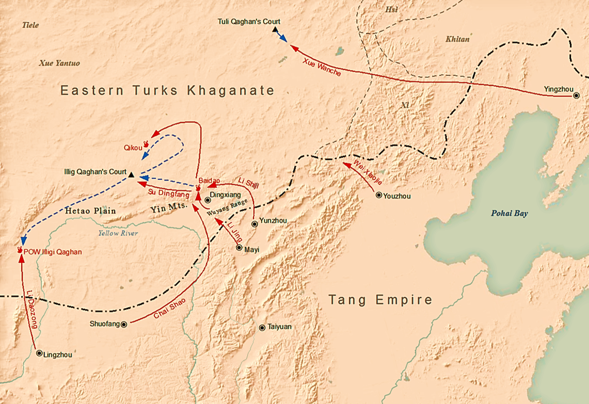

The Eastern Turkic Khaganate
(581-630)
Independence
After the brief unification under Tardush, The Eastern Empire came under the rule of Yami Qaghan (603-09) who held a loose acknowledgement of Chinese Suzeranity.
However the Sui Dynasty soon began to weaken, and Sepratist leaders from northern China swore fealty to Shibi Qaghan (609-19) and joined the Turkic Khaganate.
In 615 Shibi began raiding into China, with the Emperor and royal family only narrowly avoiding capture.
Shibi continued to sow strife in the collapsing chinese state, supporting rebel factions including supplying Yuan Li with 2,000 horses and 500 cavalry. Li would use these forces to gain crucial victories that allowed him found the Tang Dynasty in 618, which would soon reunite China. Shibi died campainging in China, and his younger brother Chuluo Khagan (619-621) took command until he died 18 months later of what was reportedly poison from chinese spies. Illig Khagan (621-630) began extending raids against Tang territory, eventually compelling the Dynasty in 626 to submit to paying regular tribute to the Turks.
Shibi continued to sow strife in the collapsing chinese state, supporting rebel factions including supplying Yuan Li with 2,000 horses and 500 cavalry. Li would use these forces to gain crucial victories that allowed him found the Tang Dynasty in 618, which would soon reunite China. Shibi died campainging in China, and his younger brother Chuluo Khagan (619-621) took command until he died 18 months later of what was reportedly poison from chinese spies. Illig Khagan (621-630) began extending raids against Tang territory, eventually compelling the Dynasty in 626 to submit to paying regular tribute to the Turks.
Chinese Invasion

Tang dynasty's campaign against Illig Qaghan in 629–630
In 627 Illig Khagan attempted to levy horses from the vassal Tiele tribes after all his livestock died from a snowstorm.
The Tiele revolted along with a number of other tribes, which Emperor Taizong of the Tang immediately allied with seeking revenge for the previous year's defeats.
Under the combined assault, Illig was defeated and captured in 630 CE by the Tang dynasty.Tang dynasty's campaign against Illig Qaghan in 629–630
Illig was put on trial but ulimately allowed to live by the emperor, under the condition that the Eastern Khaganate came under imperial control. after his death a few years later, his family remained as the leaders of the Eastern Turkic tribes, but as the vassals of the Tang dynasty.